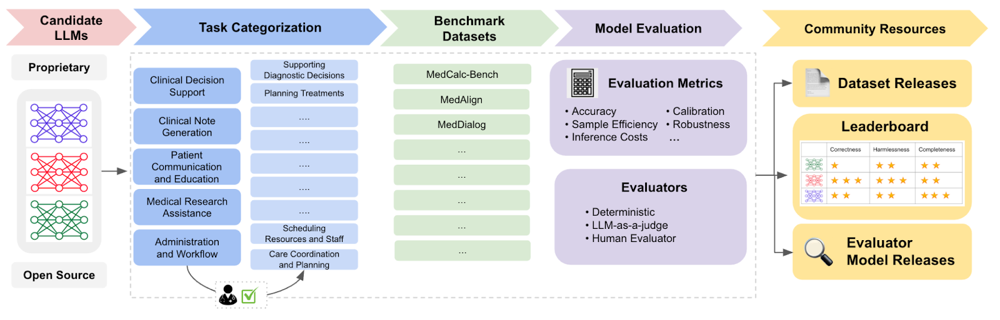

Holistic evaluation of language models for medical tasks.
An open, community-led benchmark for evaluating language models on 121 clinical tasks in a clinician-validated taxonomy. Measures accuracy, calibration, robustness, and writing style across real clinical workflows.

The clinical work MedHELM measures.
Built around clinical workflows.
Real-world scenarios
31 datasets spanning EHR notes, discharge summaries, tumor boards, and patient education. The collection includes 12 private and 6 gated-access sources drawn from clinical operations rather than exam material.
Multi-metric evaluation
Calibration, robustness to prompt variation, and writing style are reported alongside accuracy. Models that perform well on one task but fail under prompt perturbation are visible in the multi-metric view.
LLM-as-a-Jury
Open-ended outputs (discharge notes, patient letters) are rated by an ensemble of three LLMs. Agreement with expert clinicians (ICC = 0.47) exceeds clinician-to-clinician agreement and outperforms ROUGE and BERTScore on the same task set.
Air-gapped and local-first
Evaluations can be run against local inference servers (vLLM, Ollama) without data leaving the network. Hospital systems can evaluate models on real patient data inside their existing infrastructure.
Installation and a first benchmark.
Built and extended by clinical researchers.
Add a clinical scenario
Datasets in specialty areas such as radiology reporting or surgical documentation can be added to the library via the Scenario Definition guide.
Scenario guide →Refine the LLM-Jury
Evaluation prompts can be improved to better capture specialty-specific documentation conventions and to increase agreement with expert clinician ratings.
Contributing guide →Report and request
Bug reports, proposed metrics, and suggestions for new test suites (HealthBench, agentic workflows, multi-step clinical reasoning) are tracked on GitHub Issues.
GitHub Issues →Goals & roadmap
MedHELM aims to be a new public repo with fewer dependencies, easier installation, and public documentation. We welcome feedback on:
- Non-gated alternatives: We provide 7 non-gated datasets (e.g. PubMedQA, MedCalc-Bench, MedicationQA, MedHallu, and others in the Standard and Summarization tiers) as free alternatives for the same kinds of tasks as gated benchmarks.
- Hospital & private data: We want to make it easier for hospital systems to contribute or add their own private datasets. If your institution is interested in running or contributing benchmarks, we’d like to hear from you.
Origins and stewardship
MedHELM is a multi-institutional effort to develop standardized, clinically grounded benchmarks for evaluating large language models in healthcare. It was made possible by a unique collaboration between the Center for Research on Foundation Models, Technology and Digital Solutions at Stanford Healthcare, and Microsoft Healthcare and Life Sciences in partnership with faculty in the Departments of Medicine, Computer Science, Anesthesiology, Dermatology, Pediatrics and Biomedical Data Science as well as trainees from the MCiM program at the Clinical Excellence Research Center. The effort was coordinated by the Center for Biomedical Informatics Research.
The initiative focuses on real-world clinical tasks, emphasizing:
- Transparency
- Reproducibility
- Practical relevance for healthcare deployment
It builds on the HELM framework from the Center for Research on Foundation Models (CRFM) at Stanford and focuses on:
- Medical datasets and benchmarks (e.g. PubMedQA, MedQA, MedMCQA, ACI-Bench, DischargeMe)
- Models from various providers via a unified interface (e.g. Hugging Face, OpenAI, Anthropic)
- Metrics and a web UI for inspecting prompts and responses
- A leaderboard for comparing models on medical tasks
In 2026, MedHELM transitioned to an independent community-led project. Pacific AI provides technical stewardship of the codebase, including engineering resources for releases, upgrades, and maintenance, while the project itself remains community-owned under the Apache 2.0 license.
Citation · Bedi et al., Nature Medicine 2026
@Article{Bedi2026,
author={Bedi, Suhana and Cui, Hejie and Fuentes, Miguel and Unell, Alyssa and Wornow, Michael and Banda, Juan M. and Kotecha, Nikesh and Keyes, Timothy and Mai, Yifan and Oez, Mert and Qiu, Hao and Jain, Shrey and Schettini, Leonardo and Kashyap, Mehr and Fries, Jason Alan and Swaminathan, Akshay and Chung, Philip and Haredasht, Fateme Nateghi and Lopez, Ivan and Aali, Asad and Tse, Gabriel and Nayak, Ashwin and Vedak, Shivam and Jain, Sneha S. and Patel, Birju and Fayanju, Oluseyi and Shah, Shreya and Goh, Ethan and Yao, Dong-han and Soetikno, Brian and Reis, Eduardo and Gatidis, Sergios and Divi, Vasu and Capasso, Robson and Saralkar, Rachna and Chiang, Chia-Chun and Jindal, Jenelle and Pham, Tho and Ghoddusi, Faraz and Lin, Steven and Chiou, Albert S. and Hong, Hyo Jung and Roy, Mohana and Gensheimer, Michael F. and Patel, Hinesh and Schulman, Kevin and Dash, Dev and Char, Danton and Downing, Lance and Grolleau, Francois and Black, Kameron and Mieso, Bethel and Zahedivash, Aydin and Yim, Wen-wai and Sharma, Harshita and Lee, Tony and Kirsch, Hannah and Lee, Jennifer and Ambers, Nerissa and Lugtu, Carlene and Sharma, Aditya and Mawji, Bilal and Alekseyev, Alex and Zhou, Vicky and Kakkar, Vikas and Helzer, Jarrod and Revri, Anurang and Bannett, Yair and Daneshjou, Roxana and Chen, Jonathan and Alsentzer, Emily and Morse, Keith and Ravi, Nirmal and Aghaeepour, Nima and Kennedy, Vanessa and Chaudhari, Akshay and Wang, Thomas and Koyejo, Sanmi and Lungren, Matthew P. and Horvitz, Eric and Liang, Percy and Pfeffer, Michael A. and Shah, Nigam H.},
title={Holistic evaluation of large language models for medical tasks with MedHELM},
journal={Nature Medicine},
year={2026},
month={Mar},
day={01},
volume={32},
number={3},
pages={943-951},
abstract={While large language models (LLMs) achieve near-perfect scores on medical licensing exams, these evaluations inadequately reflect the complexity and diversity of real-world clinical practice. Here we introduce MedHELM, an extensible evaluation framework with three contributions. First, a clinician-validated taxonomy organizing medical AI applications into five categories that mirror real clinical tasks---clinical decision support (diagnostic decisions, treatment planning), clinical note generation (visit documentation, procedure reports), patient communication (education materials, care instructions), medical research (literature analysis, clinical data analysis) and administration (scheduling, workflow coordination). These encompass 22 subcategories and 121 specific tasks reflecting daily medical practice. Second, a comprehensive benchmark suite of 37 evaluations covering all subcategories. Third, systematic comparison of nine frontier LLMs---Claude 3.5 Sonnet, Claude 3.7 Sonnet, DeepSeek R1, Gemini 1.5 Pro, Gemini 2.0 Flash, GPT-4o, GPT-4o mini, Llama 3.3 and o3-mini---using an automated LLM-jury evaluation method. Our LLM-jury uses multiple AI evaluators to assess model outputs against expert-defined criteria. Advanced reasoning models (DeepSeek R1, o3-mini) demonstrated superior performance with win rates of 66{\%}, although Claude 3.5 Sonnet achieved comparable results at 15{\%} lower computational cost. These results not only highlight current model capabilities but also demonstrate how MedHELM could enable evidence-based selection of medical AI systems for healthcare applications.},
issn={1546-170X},
doi={10.1038/s41591-025-04151-2},
url={https://doi.org/10.1038/s41591-025-04151-2}
}
@article{
liang2023holistic,
title={Holistic Evaluation of Language Models},
author={Percy Liang and Rishi Bommasani and Tony Lee and Dimitris Tsipras and Dilara Soylu and Michihiro Yasunaga and Yian Zhang and Deepak Narayanan and Yuhuai Wu and Ananya Kumar and Benjamin Newman and Binhang Yuan and Bobby Yan and Ce Zhang and Christian Alexander Cosgrove and Christopher D Manning and Christopher Re and Diana Acosta-Navas and Drew Arad Hudson and Eric Zelikman and Esin Durmus and Faisal Ladhak and Frieda Rong and Hongyu Ren and Huaxiu Yao and Jue WANG and Keshav Santhanam and Laurel Orr and Lucia Zheng and Mert Yuksekgonul and Mirac Suzgun and Nathan Kim and Neel Guha and Niladri S. Chatterji and Omar Khattab and Peter Henderson and Qian Huang and Ryan Andrew Chi and Sang Michael Xie and Shibani Santurkar and Surya Ganguli and Tatsunori Hashimoto and Thomas Icard and Tianyi Zhang and Vishrav Chaudhary and William Wang and Xuechen Li and Yifan Mai and Yuhui Zhang and Yuta Koreeda},
journal={Transactions on Machine Learning Research},
issn={2835-8856},
year={2023},
url={https://openreview.net/forum?id=iO4LZibEqW},
note={Featured Certification, Expert Certification}
}
HELM citation · Liang et al., TMLR 2023
@article{liang2023holistic,
title={Holistic Evaluation of Language Models},
author={Percy Liang and Rishi Bommasani and Tony Lee and others},
journal={Transactions on Machine Learning Research},
year={2023},
url={https://openreview.net/forum?id=iO4LZibEqW}
}